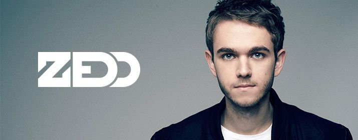

Mainstage
Zedd ist ein russisch-deutscher Musikproduzent und DJ des Electro House und
Dubstep. Den größten Erfolg hatte er bisher 2014 mit seiner Single Clarity, die die
Top Ten der US-Charts erreichte und mit einem Grammy ausgezeichnet wurde.
Für den Soundtrack zum Film „Die Unfassbaren“ steuerte er den Song Codecaus
seinem Album Claritybei.
2013 erreichte er mit Stay the Night, das er mit der US-amerikanischen Sängerin
Hayley Williams aufnahm, die Charts sämtlicher Länder. In Australien wurde das
Duo mit Platin ausgezeichnet.
2014 veröffentlichte Zedd gemeinsam mit Matthew Koma und der schwedischen
Soul-Pop-Sängerin Miriam Bryant das Lied Find You, das als Titelsong für den Film
„Divergent” verwendet wurde.
Zedd ist neben seiner Solokarriere insbesondere als Remixer aktiv. Erfolgreich
waren besonders seine Remixe für Lady Gagas Born This Way, Skrillex’ Scary
Monsters and Nice Spritesund The Time (Dirty Bit)von den Black Eyed Peas.
Er produzierte, schrieb und komponierte Lieder für Sänger wie Justin Bieber, Nicki
Minaj, Lady Gaga oder Eva Simons. Zudem begleitete er Lady Gaga als DJ auf ihren
Live-Touren und trat in Asien als Vorband in Lady Gagas The Born This Way Ball
Tourauf.
Aktuell ist Zedd mit der US-amerikanischen Sängerin und Schauspielerin Selena
Gomez liiert. Aktuell erschien am 24.2.2015 ihr gemeinsamer Track I Want You To
Know.